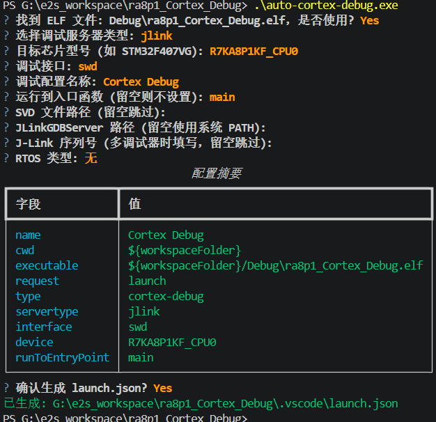
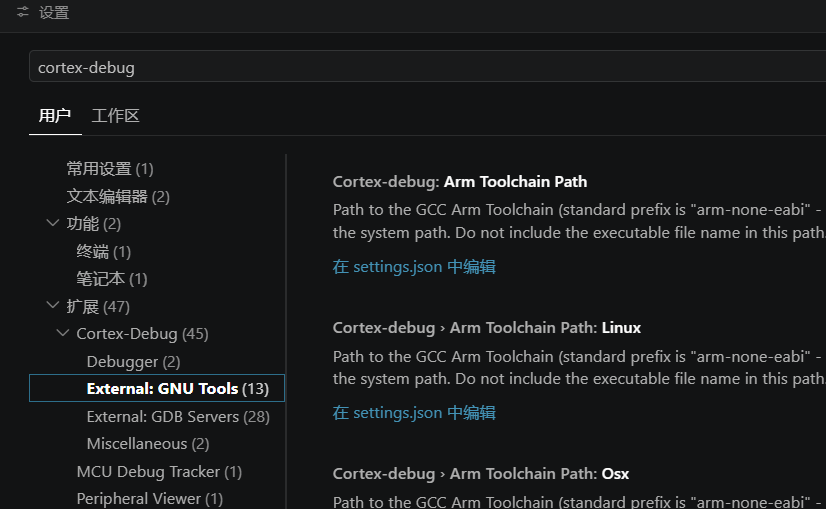
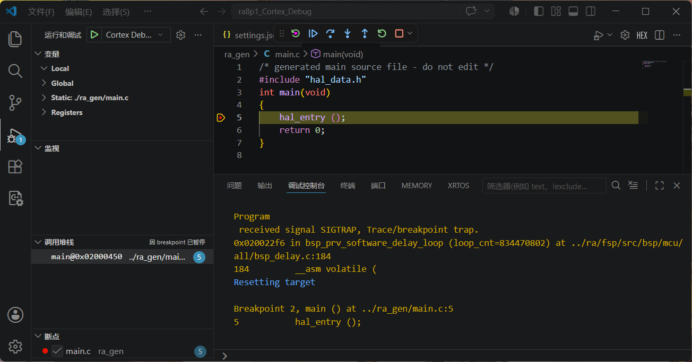
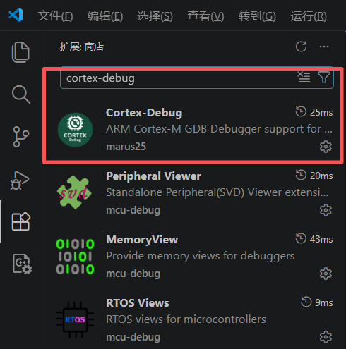

RA8P1 Titan Board（Cortex-M85，1GHz）也可以使用e2studio开发，e2studio项目构建、FSP 配置等功能完善，e2studio例程多，调试体验不如 VSCode 通用和现代。
本文介绍一种混合开发方案：使用 e2studio 构建项目，在 VSCode 中使用 Cortex-Debug 扩展调试项目。
该方案的优势：
| 步骤 | 内容 | 工具 |
|---|---|---|
| 第 1 步 | e2studio 创建/构建项目 | e2studio |
| 第 2 步 | auto-cortex-debug 自动生成 launch.json | VSCode 终端 |
| 第 3 步 | 配置 toolchain 和 JLinkGDBServerCL 路径 | VSCode 设置 |
| 第 4 步 | F5 启动调试 | VSCode Cortex-Debug |
| 第 5 步 | （可选）VSCode 终端编译项目 | VSCode 终端 |
对于新手，VSCode 中 Cortex-Debug 调试项目的核心难点是配置 launch.json，需要正确设置 ELF 路径、调试服务器、芯片型号、调试接口等多项参数，容易出错。
我们使用 GitHub 项目 auto-cortex-debug，其提供的 auto-cortex-debug.exe 可以引导用户交互式地完成 launch.json 的配置工作。

运行示例：
PS G:\e2s_workspace\ra8p1_Cortex_Debug> .\auto-cortex-debug.exe
? 找到 ELF 文件: Debug\ra8p1_Cortex_Debug.elf，是否使用? Yes
? 选择调试服务器类型: jlink
? 目标芯片型号 (如 STM32F407VG): R7KA8P1KF_CPU0
? 调试接口: swd
? 调试配置名称: Cortex Debug
? 运行到入口函数 (留空则不设置): main
? SVD 文件路径 (留空跳过):
? JLinkGDBServer 路径 (留空使用系统 PATH):
? J-Link 序列号 (多调试器时填写，留空跳过):
? RTOS 类型: 无
配置摘要
┏━━━━━━━━━━━━━━━━━┳━━━━━━━━━━━━━━━━━━━━━━━━━━━━━━━━━━━━━━━━━━━━━━━━━┓
┃ 字段 ┃ 值 ┃
┡━━━━━━━━━━━━━━━━━╇━━━━━━━━━━━━━━━━━━━━━━━━━━━━━━━━━━━━━━━━━━━━━━━━━┩
│ name │ Cortex Debug │
│ cwd │ ${workspaceFolder} │
│ executable │ ${workspaceFolder}/Debug\ra8p1_Cortex_Debug.elf │
│ request │ launch │
│ type │ cortex-debug │
│ servertype │ jlink │
│ interface │ swd │
│ device │ R7KA8P1KF_CPU0 │
│ runToEntryPoint │ main │
└─────────────────┴─────────────────────────────────────────────────┘
? 确认生成 launch.json? Yes
已生成: G:\e2s_workspace\ra8p1_Cortex_Debug\.vscode\launch.json
重要：toolchain 和 JLinkGDBServerCL.exe 必须通过 VSCode 的 cortex-debug 设置项去配置，而不能写在
settings.json里（在settings.json中配置似乎无效）。
配置方法：按 Ctrl+, 打开 VSCode 设置，搜索 cortex-debug，分别设置以下两项：
cortex-debug.armToolchainPath：ARM GCC toolchain 的 bin 目录路径cortex-debug.JLinkGDBServerPath：JLinkGDBServerCL.exe 的完整路径
配置值示例：
"cortex-debug.armToolchainPath": "D:\\Program Files\\GCC\\arm-gnu-toolchain-13.3.rel1-mingw-w64-i686-arm-none-eabi\\bin",
"cortex-debug.JLinkGDBServerPath": "D:\\Program Files\\SEGGER\\JLink_V938a\\JLinkGDBServerCL.exe",
配置完成后，在 VSCode 中按 F5 即可正常启动 Cortex-Debug 调试：

调试界面功能完整，支持断点、单步、变量查看、寄存器查看、SVD 外设视图等：

至此，就可以实现 e2studio 编译，VSCode 调试 的工作流。
除了 e2studio 编译，也可以在 VSCode 终端中直接编译项目。有两种方式：
直接使用 e2studio 自带 make 的完整路径：
PS G:\e2s_workspace\ra8p1_Cortex_Debug> & "D:\Renesas\e2_studio\eclipse\plugins\com.renesas.ide.exttools.gnumake.win32.x86_64_4.3.1.v20240909-0854\mk\make.exe" -C Debug all
make: Entering directory 'G:/e2s_workspace/ra8p1_Cortex_Debug/Debug'
arm-none-eabi-size --format=berkeley "ra8p1_Cortex_Debug.elf"
text data bss dec hex filename
22044 448 45908 68400 10b30 ra8p1_Cortex_Debug.elf
make: Leaving directory 'G:/e2s_workspace/ra8p1_Cortex_Debug/Debug'
清理：
PS G:\e2s_workspace\ra8p1_Cortex_Debug> & "D:\Renesas\e2_studio\eclipse\plugins\com.renesas.ide.exttools.gnumake.win32.x86_64_4.3.1.v20240909-0854\mk\make.exe" -C Debug clean
将 e2studio 的 make 目录加入系统 PATH 环境变量：
D:\Renesas\e2_studio\eclipse\plugins\com.renesas.ide.exttools.gnumake.win32.x86_64_4.3.1.v20240909-0854\mk
添加后刷新环境变量（PowerShell）：
$env:Path = [Environment]::GetEnvironmentVariable("Path", "Machine")
之后即可使用简短的 make 命令：
PS G:\e2s_workspace\ra8p1_Cortex_Debug> make -C Debug all
make: Entering directory 'G:/e2s_workspace/ra8p1_Cortex_Debug/Debug'
arm-none-eabi-size --format=berkeley "ra8p1_Cortex_Debug.elf"
text data bss dec hex filename
22044 448 45908 68400 10b30 ra8p1_Cortex_Debug.elf
make: Leaving directory 'G:/e2s_workspace/ra8p1_Cortex_Debug/Debug'
清理：
PS G:\e2s_workspace\ra8p1_Cortex_Debug> make -C Debug clean
e2studio 创建/配置项目
│
▼
e2studio 构建项目（或 VSCode 终端 make）
│
▼
auto-cortex-debug.exe 生成 launch.json
│
▼
VSCode 设置 cortex-debug.armToolchainPath
VSCode 设置 cortex-debug.JLinkGDBServerPath
（Ctrl+, 搜索 cortex-debug，settings.json 无效）
│
▼
VSCode F5 启动 Cortex-Debug 调试
| 要点 | 说明 |
|---|---|
| 项目构建 | e2studio 官方构建，FSP 配置器完整可用 |
| launch.json | 使用 auto-cortex-debug.exe 自动生成，避免手动配置出错 |
| toolchain 路径 | 必须通过 VSCode 设置界面配置，settings.json 无效 |
| JLinkGDBServerCL 路径 | 同上，必须通过 VSCode 设置界面配置 |
| VSCode 终端编译 | 完整路径 make 或加入 PATH 后简短 make 均可 |